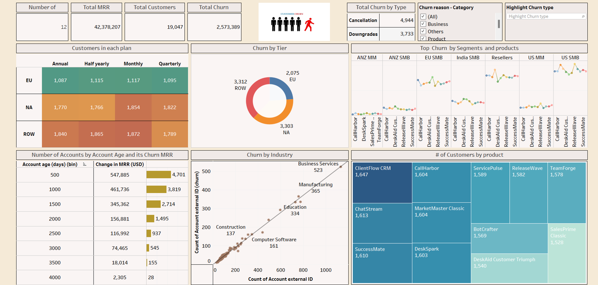
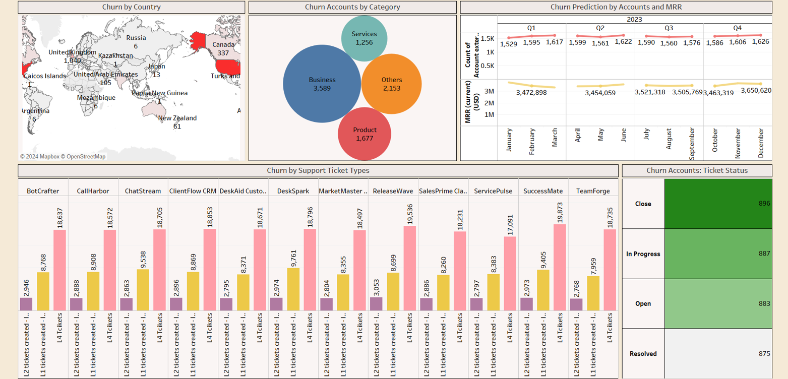

<!DOCTYPE html>
<html lang="en">
<head>
    <meta charset="UTF-8">
    <meta name="viewport" content="width=device-width, initial-scale=1.0">
    <title>Customer Churn Analysis - Yogavarshni Ramachandran</title>
    <script src="https://unpkg.com/react@18/umd/react.development.js"></script>
    <script src="https://unpkg.com/react-dom@18/umd/react-dom.development.js"></script>
    <script src="https://unpkg.com/@babel/standalone/babel.min.js"></script>
    <script src="https://cdn.tailwindcss.com"></script>
    <style>
        @import url('https://fonts.googleapis.com/css2?family=Inter:wght@300;400;500;600;700;800;900&display=swap');
        
        * { margin: 0; padding: 0; box-sizing: border-box; }
        body {
            font-family: 'Inter', sans-serif;
            background: #000000;
            color: #ffffff;
            overflow-x: hidden;
            font-weight: 300;
        }
        
        .gradient-text {
            background: linear-gradient(135deg, #ffffff 0%, #cccccc 50%, #999999 100%);
            -webkit-background-clip: text;
            -webkit-text-fill-color: transparent;
            background-clip: text;
            font-weight: 700;
        }
        
        .glass-card {
            background: rgba(255, 255, 255, 0.03);
            backdrop-filter: blur(20px);
            border: 1px solid rgba(255, 255, 255, 0.08);
            border-radius: 20px;
        }
        
        .btn-primary {
            background: linear-gradient(135deg, #ffffff 0%, #cccccc 100%);
            color: #000000;
            border: none;
            padding: 14px 32px;
            border-radius: 30px;
            font-weight: 600;
            font-size: 14px;
            transition: all 0.3s ease;
            text-transform: uppercase;
            letter-spacing: 1px;
            text-decoration: none;
            display: inline-block;
        }
        
        .btn-primary:hover {
            transform: translateY(-2px);
            box-shadow: 0 8px 20px rgba(255, 255, 255, 0.2);
        }
        
        .notion-tech-badge {
            background: rgba(102, 126, 234, 0.15);
            color: #a5b4fc;
            padding: 6px 12px;
            border-radius: 15px;
            font-size: 0.75rem;
            font-weight: 600;
            border: 1px solid rgba(102, 126, 234, 0.3);
        }
        
        .notion-tabs { display: flex; gap: 8px; margin-bottom: 24px; flex-wrap: wrap; }
        
        .notion-tab-button {
            background: rgba(255, 255, 255, 0.08);
            border: none;
            color: #8892b0;
            padding: 12px 20px;
            border-radius: 24px;
            cursor: pointer;
            font-size: 0.9rem;
            font-weight: 500;
            transition: all 0.3s ease;
            border: 1px solid rgba(255, 255, 255, 0.1);
        }
        
        .notion-tab-button.active {
            background: rgba(102, 126, 234, 0.2);
            color: #a5b4fc;
            border-color: rgba(102, 126, 234, 0.4);
        }
        
        nav {
            backdrop-filter: blur(30px);
            background: rgba(0, 0, 0, 0.8);
            border-bottom: 1px solid rgba(255, 255, 255, 0.05);
        }

        .back-link { cursor: pointer; transition: all 0.3s ease; }
        .back-link:hover { opacity: 0.8; }

        .dashboard-image {
            width: 100%;
            border-radius: 16px;
            border: 2px solid rgba(255, 255, 255, 0.1);
            margin: 20px 0;
        }
    </style>
</head>
<body>
    <div id="root"></div>
    
    <script type="text/babel">
        const { useState } = React;
        
        const ProjectPage = () => {
            const [activeTab, setActiveTab] = useState('overview');
            
            const handleBackClick = (e) => {
                e.preventDefault();
                window.location.href = 'index.html';
                setTimeout(() => {
                    const projectsSection = document.getElementById('projects');
                    if (projectsSection) {
                        projectsSection.scrollIntoView({ behavior: 'smooth' });
                    }
                }, 100);
            };
            
            return (
                <div className="min-h-screen bg-black">
                    <nav className="fixed top-0 w-full z-50 transition-all duration-500 py-4">
                        <div className="container mx-auto px-8 flex justify-between items-center">
                            <a href="index.html" onClick={handleBackClick} className="text-2xl font-black tracking-tight text-white hover:text-gray-300 transition-colors back-link">
                                ← Yogavarshni
                            </a>
                            <a href="index.html#projects" onClick={handleBackClick} className="text-gray-400 hover:text-white transition-colors back-link">
                                Back to Projects
                            </a>
                        </div>
                    </nav>
                    
                    <div className="pt-24 pb-16">
                        <div className="container mx-auto px-8 max-w-6xl">
                            <div className="mb-12">
                                <div className="flex items-center gap-4 mb-6">
                                    <div className="text-6xl">📉</div>
                                    <div>
                                        <h1 className="text-4xl md:text-5xl font-black text-white mb-3">Customer Churn Analysis (Tableau)</h1>
                                        <p className="text-xl text-gray-300">Subscription Business Intelligence & Customer Retention Analytics</p>
                                    </div>
                                </div>
                                
                                <div className="flex flex-wrap gap-3 mb-8">
                                    <span className="px-4 py-2 rounded-full text-sm font-medium bg-green-500/20 text-green-400">Done</span>
                                    <span className="px-4 py-2 rounded-full text-sm font-medium bg-blue-500/20 text-blue-400">January 4, 2024</span>
                                    <span className="px-4 py-2 rounded-full text-sm font-medium bg-purple-500/20 text-purple-400">Data Visualization & BI</span>
                                </div>
                                
                                <div className="flex gap-4 mb-8 flex-wrap">
                                    <a href="https://public.tableau.com/app/profile/yogavarshni.ramachandran/viz/CustomerChurnAnalysis_17061728390160/Dashboard2?publish=yes" target="_blank" rel="noopener noreferrer" className="btn-primary">📊 Tableau Dashboard</a>
                                    <a href="#" target="_blank" rel="noopener noreferrer" className="btn-primary">Notion</a>
                                    <a href="https://github.com/Yogavarshni4699/Customer-Churn---Tableau" target="_blank" rel="noopener noreferrer" className="btn-primary">GitHub</a>
                                </div>
                                
                                <div className="notion-tabs">
                                    <button className={`notion-tab-button ${activeTab === 'overview' ? 'active' : ''}`} onClick={() => setActiveTab('overview')}>📋 Overview</button>
                                    <button className={`notion-tab-button ${activeTab === 'analysis' ? 'active' : ''}`} onClick={() => setActiveTab('analysis')}>📈 Analysis</button>
                                    <button className={`notion-tab-button ${activeTab === 'insights' ? 'active' : ''}`} onClick={() => setActiveTab('insights')}>💡 Key Insights</button>
                                    <button className={`notion-tab-button ${activeTab === 'conclusion' ? 'active' : ''}`} onClick={() => setActiveTab('conclusion')}>✅ Conclusion</button>
                                </div>
                            </div>
                            
                            <div className="min-h-96">
                                {activeTab === 'overview' && (
                                    <div>
                                        <div className="mb-8">
                                            <h3 className="text-2xl font-bold text-white mb-4 gradient-text">Introduction</h3>
                                            <p className="text-gray-300 leading-relaxed mb-6">
                                                The provided dashboard images offer a comprehensive analysis of customer churn data for a subscription-based business. Customer churn, the rate at which customers stop doing business with an entity, is a critical metric for businesses relying on recurring revenue streams. The data spans various dimensions, including geography, customer tier, churn reason, and industry, which can provide actionable insights for decision-makers.
                                            </p>
                                        </div>

                                        <div className="mb-8">
                                            <h3 className="text-2xl font-bold text-white mb-4 gradient-text">Dataset Used</h3>
                                            <ul className="space-y-2 ml-4">
                                                <li className="text-gray-300 flex items-start">
                                                    <span className="text-blue-400 mr-3 mt-1">1.</span>
                                                    Current Active Customers
                                                </li>
                                                <li className="text-gray-300 flex items-start">
                                                    <span className="text-blue-400 mr-3 mt-1">2.</span>
                                                    Churned Customers
                                                </li>
                                                <li className="text-gray-300 flex items-start">
                                                    <span className="text-blue-400 mr-3 mt-1">3.</span>
                                                    Customer Support Ticket Data
                                                </li>
                                            </ul>
                                        </div>

                                        <div className="mb-8">
                                            <h3 className="text-2xl font-bold text-white mb-4 gradient-text">Dashboard Preview</h3>
                                            <div className="space-y-6">
                                                <div>
                                                    <h4 className="text-lg font-semibold text-gray-300 mb-3">Dashboard 1: Churn Overview & Metrics</h4>
                                                    
                                                </div>
                                                <div>
                                                    <h4 className="text-lg font-semibold text-gray-300 mb-3">Dashboard 2: Detailed Analytics & Insights</h4>
                                                    
                                                </div>
                                            </div>
                                        </div>
                                        
                                        <div className="grid lg:grid-cols-1 gap-8">
                                            <div>
                                                <h3 className="text-2xl font-bold text-white mb-4 gradient-text">Business Use Case</h3>
                                                <p className="text-gray-300 leading-relaxed mb-4">
                                                    Businesses with subscription models can utilize such data to identify patterns and root causes of customer churn. By analyzing churn by region, subscription plan, industry, and support ticket types, companies can develop targeted strategies to retain customers.
                                                </p>
                                                <p className="text-gray-300 leading-relaxed">
                                                    This data is precious for customer success teams, Go-To-Market Strategies, Marketing strategists, and Product Managers who aim to improve customer retention, optimize product offerings, and tailor communication strategies.
                                                </p>
                                            </div>
                                        </div>
                                        
                                        <div className="mt-8">
                                            <h3 className="text-2xl font-bold text-white mb-4 gradient-text">Tools Used</h3>
                                            <div className="flex flex-wrap gap-2">
                                                {["Tableau", "Customer Analytics", "Churn Analysis", "Business Intelligence", "Statistical Analysis", "Data Visualization"].map((tool, index) => (
                                                    <span key={index} className="notion-tech-badge">{tool}</span>
                                                ))}
                                            </div>
                                        </div>
                                    </div>
                                )}
                                
                                {activeTab === 'analysis' && (
                                    <div>
                                        <h3 className="text-2xl font-bold text-white mb-6 gradient-text">Analysis and Insights</h3>
                                        <div className="space-y-6">
                                            <div className="bg-gray-800/30 rounded-lg p-6">
                                                <div className="text-xl font-bold text-white mb-3">1. Customer Subscription Metrics</div>
                                                <ul className="text-gray-300 space-y-2 ml-4">
                                                    <li>• The business has 19,047 total customers and a Monthly Recurring Revenue (MRR) of $42,378,207.</li>
                                                    <li>• Churn seems evenly distributed across different subscription plans (Annual, half-yearly, Monthly, Quarterly) with slight variations between regions (EU, NA, ROW).</li>
                                                </ul>
                                            </div>

                                            <div className="bg-gray-800/30 rounded-lg p-6">
                                                <div className="text-xl font-bold text-white mb-3">2. Churn Analysis</div>
                                                <ul className="text-gray-300 space-y-2 ml-4">
                                                    <li>• Total churn of 2,573,389 with a higher incidence of cancellations (4,944) compared to downgrades (3,733).</li>
                                                    <li>• Churn by Tier and Industry shows significant variability, with the NA region and Business Services industry experiencing the highest churn.</li>
                                                    <li>• Churn by Account Age indicates that newer accounts (500 days old) have a more substantial positive change in MRR despite churn, suggesting that initial growth overshadows the revenue lost due to churn.</li>
                                                </ul>
                                            </div>

                                            <div className="bg-gray-800/30 rounded-lg p-6">
                                                <div className="text-xl font-bold text-white mb-3">3. Product Performance</div>
                                                <ul className="text-gray-300 space-y-2 ml-4">
                                                    <li>• The product ClientFlow CRM has the highest number of customers, while SalesPrime Classic has the fewest.</li>
                                                    <li>• The Top Churn by Segments and Products chart indicates varying churn rates across customer segments and products. This variability points to potential issues with specific products or market segments.</li>
                                                </ul>
                                            </div>

                                            <div className="bg-gray-800/30 rounded-lg p-6">
                                                <div className="text-xl font-bold text-white mb-3">4. Churn Prediction and Support Ticket Analysis</div>
                                                <ul className="text-gray-300 space-y-2 ml-4">
                                                    <li>• Churn Prediction by Accounts and MRR suggests a stable outlook with a slight increase in churn expected in Q4.</li>
                                                    <li>• Most churn accounts have tickets marked as 'Open' or 'In Progress', suggesting a potential correlation between unresolved support tickets and churn.</li>
                                                </ul>
                                            </div>

                                            <div className="bg-gray-800/30 rounded-lg p-6">
                                                <div className="text-xl font-bold text-white mb-3">5. Geographic Churn Distribution</div>
                                                <ul className="text-gray-300 space-y-2 ml-4">
                                                    <li>• Churn by Country identifies Russia, Canada, and the United Kingdom as the top three countries experiencing churn.</li>
                                                    <li>• Churn Accounts by Category highlights that 'Business' reasons are the leading cause of churn.</li>
                                                </ul>
                                            </div>
                                        </div>
                                    </div>
                                )}
                                
                                {activeTab === 'insights' && (
                                    <div>
                                        <h3 className="text-2xl font-bold text-white mb-6 gradient-text">Strategic Insights</h3>
                                        <div className="space-y-6">
                                            <div className="bg-gray-800/30 rounded-lg p-6">
                                                <div className="text-xl font-bold text-white mb-3">High-Risk Customer Identification</div>
                                                <div className="text-gray-300">
                                                    Analysis reveals specific customer segments with elevated churn probability, enabling proactive retention campaigns targeting the most vulnerable accounts before they decide to leave.
                                                </div>
                                            </div>

                                            <div className="bg-gray-800/30 rounded-lg p-6">
                                                <div className="text-xl font-bold text-white mb-3">Geographic Opportunity Mapping</div>
                                                <div className="text-gray-300">
                                                    Regional churn analysis uncovers underperforming markets and successful retention models that can be replicated across similar geographic segments for improved customer loyalty.
                                                </div>
                                            </div>

                                            <div className="bg-gray-800/30 rounded-lg p-6">
                                                <div className="text-xl font-bold text-white mb-3">Revenue Protection Strategy</div>
                                                <div className="text-gray-300">
                                                    Tier-based churn analysis prioritizes retention efforts on high-value customers, maximizing the ROI of customer success initiatives and minimizing revenue impact from departures.
                                                </div>
                                            </div>

                                            <div className="bg-gray-800/30 rounded-lg p-6">
                                                <div className="text-xl font-bold text-white mb-3">Root Cause Optimization</div>
                                                <div className="text-gray-300">
                                                    Systematic categorization of churn reasons enables targeted product and service improvements, addressing the fundamental issues driving customer dissatisfaction and attrition.
                                                </div>
                                            </div>

                                            <div className="bg-gray-800/30 rounded-lg p-6">
                                                <div className="text-xl font-bold text-white mb-3">Industry Benchmarking</div>
                                                <div className="text-gray-300">
                                                    Cross-industry comparison provides context for churn performance and identifies best practices from high-retention sectors that can be adapted to improve overall customer loyalty.
                                                </div>
                                            </div>

                                            <div className="bg-gray-800/30 rounded-lg p-6">
                                                <div className="text-xl font-bold text-white mb-3">Predictive Indicators</div>
                                                <div className="text-gray-300">
                                                    Temporal pattern analysis establishes early warning signals and optimal intervention timing, enabling proactive customer success outreach before churn occurs.
                                                </div>
                                            </div>
                                        </div>
                                    </div>
                                )}
                                
                                {activeTab === 'conclusion' && (
                                    <div>
                                        <div className="mb-8">
                                            <h3 className="text-2xl font-bold text-white mb-4 gradient-text">Strategic Recommendations</h3>
                                            <p className="text-gray-300 leading-relaxed mb-6">
                                                The comprehensive churn analysis reveals critical patterns across geographic, demographic, and behavioral dimensions that directly impact customer retention. The data-driven insights enable targeted interventions and strategic resource allocation for maximum retention effectiveness.
                                            </p>
                                            <p className="text-gray-300 leading-relaxed mb-6">
                                                Key findings indicate that proactive engagement based on predictive indicators can significantly reduce churn rates, while geographic and tier-specific strategies maximize retention ROI. The analysis framework provides a scalable foundation for ongoing customer success optimization.
                                            </p>
                                        </div>
                                        
                                        <div className="mb-8">
                                            <h3 className="text-2xl font-bold text-white mb-4 gradient-text">Implementation Roadmap</h3>
                                            <ul className="space-y-3">
                                                <li className="text-gray-300 flex items-start">
                                                    <span className="text-green-400 mr-3 mt-1">✓</span>
                                                    Deploy predictive churn models based on identified risk factors and temporal patterns
                                                </li>
                                                <li className="text-gray-300 flex items-start">
                                                    <span className="text-green-400 mr-3 mt-1">✓</span>
                                                    Implement tier-specific retention campaigns targeting high-value customer segments
                                                </li>
                                                <li className="text-gray-300 flex items-start">
                                                    <span className="text-green-400 mr-3 mt-1">✓</span>
                                                    Establish geographic-specific customer success protocols for underperforming regions
                                                </li>
                                                <li className="text-gray-300 flex items-start">
                                                    <span className="text-green-400 mr-3 mt-1">✓</span>
                                                    Address root cause issues identified through systematic churn reason analysis
                                                </li>
                                                <li className="text-gray-300 flex items-start">
                                                    <span className="text-green-400 mr-3 mt-1">✓</span>
                                                    Establish continuous monitoring dashboard for real-time churn prevention
                                                </li>
                                            </ul>
                                        </div>

                                        <div className="mb-8">
                                            <h3 className="text-2xl font-bold text-white mb-4 gradient-text">Business Impact</h3>
                                            <p className="text-gray-300 leading-relaxed">
                                                This analytical framework empowers subscription businesses to transform reactive customer support into proactive retention management. By leveraging data-driven insights across geographic, tier, and behavioral dimensions, organizations can optimize customer lifetime value and build sustainable competitive advantages through superior retention performance.
                                            </p>
                                        </div>
                                    </div>
                                )}
                            </div>
                        </div>
                    </div>
                </div>
            );
        };
        
        ReactDOM.render(<ProjectPage />, document.getElementById('root'));
    </script>
</body>
</html>
